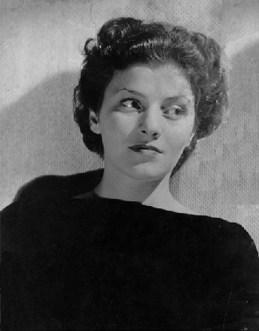

- Increase the strength and power* of your acting capabilities.
- You can stretch the skills that you already have.
- Increase your endurance.
- Add to your repertoire.
- Focus your concentration.
- Recover from injuries (which usually come from poor teaching or incomplete understanding of techniques).
- Be relaxed. You can workout and experiment at the Actor's Gym without fear of reprimands or reprisals. There is no negativity. Comments are always limited to likes and adds (see our resources page for more info).
- Take classes and work collaboratively on your skills and techniques. Pick up a few pointers or pass your knowledge along.
Please take heart that Acting is an extreme sport. It's not for the faint of heart, nor the weakly motivated. However, it can be a lot of fun!
And the better you get, the more fun you'll have. The Actor's Gym is a safe place for actors to exercise, practice, train, experiment, socialize, and get feedback.
Anyone who says that they must break you down before you can learn is not a teacher: they're a con artist or worse (yes, there are far worse than con artists!). Should you find someone like this, drop whatever you're carrying and run--don't walk--to the opposite direction!
At the Actor's Gym, the only comments allowed are "likes" and "adds". For example, "I really liked that burp at the beginning. It showed me that you didn't care. How about adding some smirking as well?"
By limiting feedback, we try to create a safe area--one where actors can feel comfortable to experiment and try new ideas and modes of working.
With freedom to try anything comes opportunities to fail (spectacularly!). And nothing teaches better than failure!
It has been my experience that often the very best and most interesting performances come when actors are relaxed, comfortable, and no longer trying to "do it right." So when directing movies, I usually say, "That take was perfect! Let's do one more, for fun." We almost always use that "for fun" take.
For those interested in learning acting techniques, classes based on the writings of Richard Boleslavsky are available. Yeah, I know--who the hell is Boleslavsky? Well I think he has the best technique for beginners and intermediate actors.
Boleslavsky's technique is straight-forward, no-nonsense, and doesn't require anyone to surrender their ego to a teacher or school of thought. I highly recommend finding a copy of his book, Acting, the First Six Lessons and reading it right now!
Workouts, the mainstay of the Actor's Gym, are for people who already have solid techniques and are looking to use them, stretch them, supplant them, or simply to experiement.
Most of our workouts consist of quick self-rehearsals, performances, quick evaluation, se
Once in a while, we have workshops using methods touted by Viola Spolin. That means games! Yes, lots of acting games, each game targets some bit of the acting craft. These games work best with a mix actors of all backgrounds and abilities. And they're fun, too!
Look at the Calendar for more info about the times and places of these special workshops. See you there!
* Please do not use your new-found strength and powers for evil. Thanks.